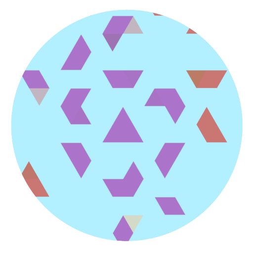
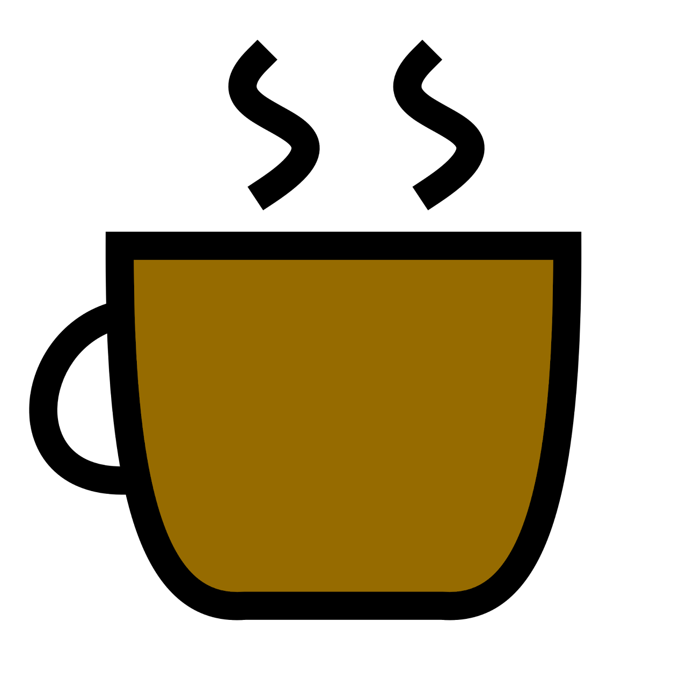
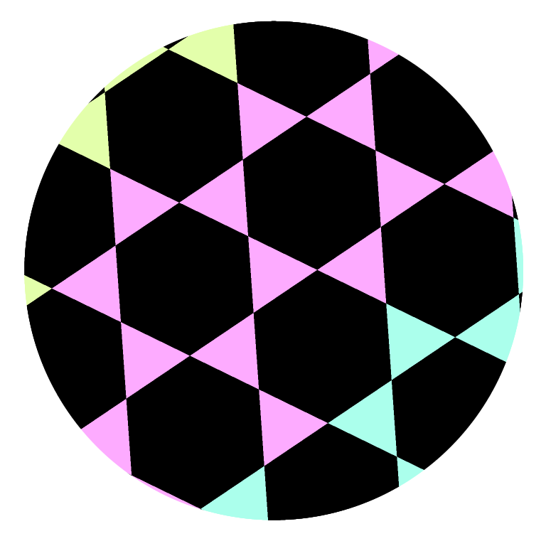
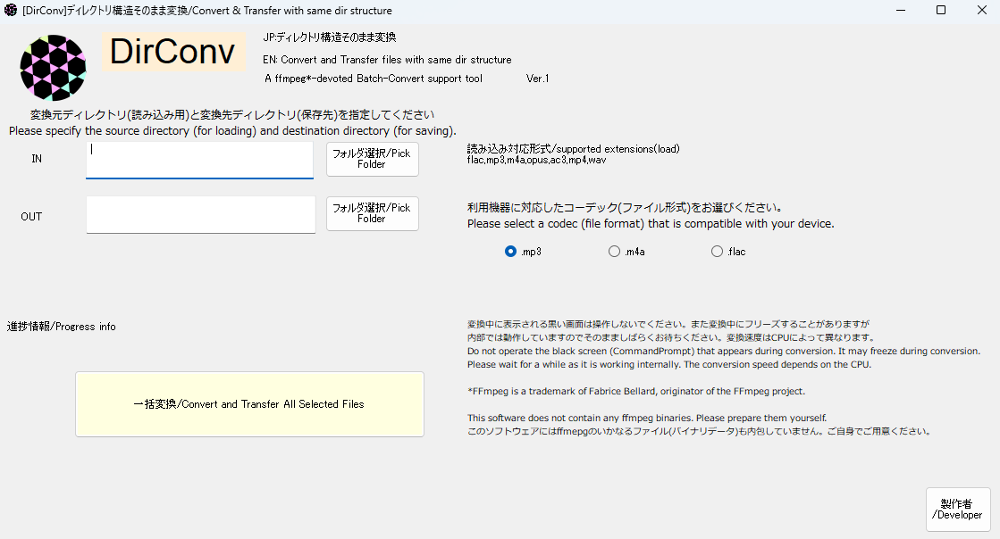
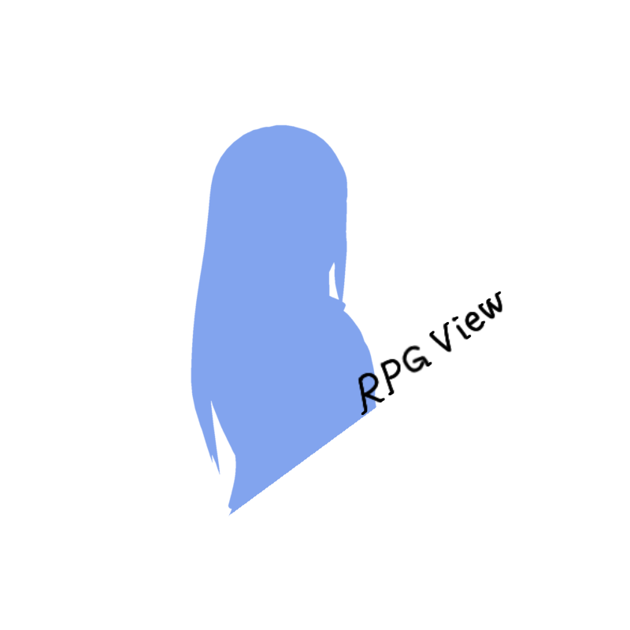

横葉の工房
Working on Apps, Software and other things
Latest News
・横茶横葉のサイトが運営を再開し、長期閉鎖期間が終了しました。このサイトは横茶横葉のサイト1または2(仮称)へ将来的にマージされる予定です。
Get More info on @YokochaYokoha
このサイトについて
このサイトの管理人横茶横葉とその他の人物が製作した成果物(アプリやソフト、ゲーム等)を作っては掲載していくサイトです。有料ソフト無し、サイト内やアプリ内広告も現在のところはありません。
管理人のサイトでは未完成品も公開されていますが、こちらでは完成品とベータ版のみを取り扱っています。完成品ベータ版を試したい方は、このサイトで、未完成品などを試したい方は管理人サイトへどうぞ!
このページに掲載されている成果物はサイト利用規約が適用されます。
Games& Web Apps by 横葉の工房
Caffeine Apps

Caffeine Apps Home
Caffeine_CSSを活用して製作されたWebサービス群「CaffeineApps」をまとめた統合サイトです。
Caffeine_Music(JP)
Caffeine_CSSを活用して製作されたWebベースローカル音楽ファイルプレーヤー
Caffeine_Movie(JP)
Caffeine_CSSを活用して製作されたWebベースローカル動画ファイル再生支援フレームワーク
One! English! Flashcards
英単語フラッシュカードをランダムに引くことが出来るサービスです。
英語の勉強に役立ててみてはいかがでしょうか?
即消費税計算/CaffeineTax
計算する ボタンを省いた用途別スマートWeb電卓
消費税計算機能を搭載したWeb電卓です。消費税率を選択して、金額を入力するだけで即座に計算結果が表示されます。
消費税率は、通常の10%と軽減税率8%の2つから選択可能です。
二次元コードユーティリティ/CaffeineCodes
広告なし! シンプルなバーコードリーダー&ライターWebアプリ
二次元コードの作成はもちろん、カメラアクセスが出来るブラウザーの場合は読み取りも行えます。
割り勘厳密計算/CaffeineWarikan
計算する ボタンを省いた用途別スマートWeb電卓第二弾
割り勘計算機能を搭載したWeb電卓です。割り勘する人数を選択して、金額を入力するだけで即座に計算結果が表示されます。
さらに、割り切れない場合はどうすれば割り勘に出来るかを文章でアドバイスする機能も搭載しています。
製作者コメント: ここまで厳密に計算する方はあまりいないと思いますので、単なる ネタ として御利用下さい(汗)。
メモ帳/Caffeine Memo
簡易的なメモ帳。 オートセーブ機能を搭載し、保存ボタンを省きました。
メモ帳の内容は、ブラウザのローカルストレージに保存されます。
ブラウザを閉じても、メモ帳の内容は保存されます。
ただし、ブラウザのキャッシュをクリアしたり、ローカルストレージを削除すると、メモ帳の内容は消えてしまいますのでご注意ください。
また、他の端末でメモ帳の内容を共有することはできませんので、あくまで個人用のメモ帳としてご利用ください。
Caffeine_Music(Former)
Caffeine_CSSを活用して製作されたWebベースローカル音楽ファイルプレーヤー
English Version is also available :Caffeine_Music(EN)
Caffeine_Movie(Former)
Caffeine_CSSを活用して製作されたWebベースローカル動画ファイル再生支援フレームワーク
Android™アプリ

Coffee Access
重要なお知らせ: Coffeeブラウザーのサポートは2025年7月24日までとなっています。
ご利用になられている方はデータバックアップを行って下さい。サポートが終了するとアプリの起動が仕様上できなくなり、データにアクセスできなくなる恐れがありますのでご注意ください。現在、後継アプリの開発を進めています。(リリース日時未定 確定次第お知らせいたします。)
その他詳しい情報は横葉の工房公式Xアカウントをご覧ください。(URLはこのページの上部LatestNews欄にございます。)
こちらのアプリはCoffeeブラウザーのサポート終了に合わせて製作されたアクセスアプリです。 ブラウジング機能はありませんが、過去のお気に入りフォルダデータや閲覧履歴にアクセスでき、他のブラウザーと簡単に共有できます。サポート期限を迎え、Coffeeブラウザーが起動できなくなってしまった場合にもこのアプリをインストールすることでデータに引き続きアクセスできます。
約2.5年間に渡り、Coffeeブラウザーをご愛用頂きまして誠にありがとうございました!
ウィルスチェックの結果とハッシュ値はコチラです! (異常なし)
ダウンロードリンクはコチラです。
ミラーサイト
PC用ソフトウェア

DirConv
ディレクトリ構造を保持しながら中の音楽ファイルだけ任意のフォーマットへ変換できるソフトです。別途他ソフトが必要です。

Web開発のお供(オープンソース)
CaffeineCSS
横葉の工房制作のCSSを配布しています。また、簡単にWebページが製作できるように実装用テンプレートもご用意しています!
横茶横葉Aライセンスの下で自由に商用利用可能です!

FSLinear
横葉の工房制作のCSS第2弾! 黒基調のスタイリッシュなCSSです
横茶横葉Aライセンスの下で自由に商用利用可能です!
Caffeine自動テーマ切替
昼間にCaffeineCSS,夜間にFSLinearをテーマとして自動設定してくれるスクリプトです。昼と夜でサイトを全く違う雰囲気に!
横茶横葉Aライセンスの下で自由に商用利用可能です!

RPG View(framework)
Webサイト上でRPGゲームの会話画面を実装できるコンポーネントです。
横茶横葉Aライセンスの下で自由に商用利用可能です! 御利用の際は使いやすく改変してお使いいただけます。
Click_Once_Initializer
ClickOnce形式インストーラーでのインストールエラーが発生した場合に使用する修復プログラム "このアプリケーションは既に別の場所からインストールされています" というエラーを解消します。
横茶横葉Aライセンスの下で自由に商用利用可能です!
ベータ版テスター募集
正式リリース前の一部のサービスを最速でお試しいただけます。ユーザー登録は一切不要です。
試用後、ご意見等ございましたらお気軽にSNS、メールでお知らせください!!
注意:ベータ版は重大な欠陥点や不具合が存在する場合があります。このバージョンが残存し、悪影響を及ぼすことを避けるため、スクリーンショット、プログラムのコピーなどを含むアーカイブを行うことは全面的に禁止させていただいています。予めご了承ください。
ベータ版を試す